时是先用49/25代替2，然后得出7/5的。同样，特奥多鲁斯对于
时是先用49/25代替2，然后得出7/5的。同样，特奥多鲁斯对于 可能是用49/16代替3而得其近似数为7/4的。至于无理数本身在古典希腊时代的数学里则根本没有地位。
可能是用49/16代替3而得其近似数为7/4的。至于无理数本身在古典希腊时代的数学里则根本没有地位。1．希腊算术的记号和运算
我们暂时回头再从古典时期的算术谈起。古典希腊人把计算技术叫logistica，而他们的算术（arithmetica）则指数论。古典数学家蔑视计算技术，因它只谈商业贸易的实际计算。但我们却要把计算技术和算术一起加以考虑，看看亚历山大的希腊人在这方面所掌握的知识究竟有多少。
古典希腊人记数和运用数的技术并不继承和发展巴比伦人的遗产。在计算技术方面他们似乎是自己从头另搞的。在克里特岛上曾发现比古典时期约早500年的希腊数字。这数字系统没有什么有价值的特点，只不过用一些特别的数字符号来代表1，2，3，4，10，200，1000等。在古典时期之初，他们引用了别的一些特殊记号表示数，并用一种算盘之类的东西进行计算。其后在大约公元前500年他们用了希腊数字系统，最早出现这种数字的是公元前450年的一块碑文。在这个数字系统里，从1到4的数用直杠来记；希腊文五（penta）的第一个字母Π（以后用Γ）代表5；希腊文十（deka）的第一个字母Δ表10；百（hekaton）的头一个字母H代表100；千（chilioi）的头一个字母X表示1000；万（myrioi）的头一个字母M表示10000。这些特殊符号组合起来便形成中间的数字。如Γ｜＝6，ΓΔ＝50，ΓH＝500，ΔΓ｜｜｜＝18。
但我们不知道早期古典数学家如毕达哥拉斯学派是怎样写数的。他们也许是用石子来作计算的，因“calculus”（计算）这个字的原意是“石子”。“abacus”（算盘）的希腊文原意是“沙”，这说明在引用算盘以前（可能以后亦然），他们是在沙地上画点来记数的。从泰勒斯到欧几里得的300年间，数学家并不重视计算，这门技术也就没有进展。书本里没有提到算术的应用这一事实是足以说明问题的。
古典希腊人以后又不知为什么把他们的记数制改成爱奥尼亚（或亚历山大）制，那是完全用字母记数的。字母记数制是亚历山大希腊数学里最通用的，我们可以在托勒玫的《大汇编》一书中看到这种用法。古代叙利亚人和以色列人也是用它的。
希腊记数制的内容如下：
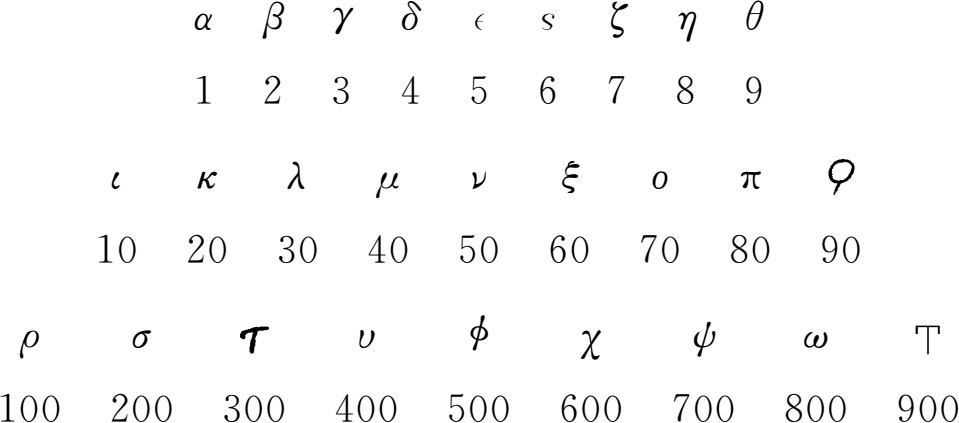
中间的数用上述符号组合而成。如ια＝11，ιβ＝12，κα＝21，ρνγ＝153。希腊数系中表示6，90和900的符号以及符号M是当时通行的希腊字母里所没有的；头三个符号现今读做stigma（或digamma），koppa和sampi，是希腊人早先借用腓尼基人较老字母表中的字母（不过腓尼基人并未用字母表示数）。从记数制中使用这些老字母一事可知这套写法早在公元前800年就有，而且可能是从小亚细亚的米利都传去的。
对大于1000的数，字母重复写，但在其前方记一直杠以免混淆。又在数上画一横线以区别于文字。如
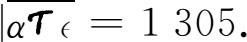
好些希腊作家采用和上述及下面要提到的数制稍有不同的写法。
亚历山大前期（公元前头三个世纪）的希腊草片纸手稿里有零的记号如
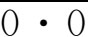
，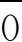
，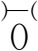
和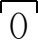
。希腊亚历山大时期的零也像巴比伦塞琉西时期的零那样用于指明缺数的地方。根据我们手头仅有的托勒玫著作的拜占庭手稿可知，他在一数的中间和末尾都用0表示零。阿基米德的《数沙法》（Sand-Reckoner）给出了写大数的一套方案。他想说明他能写出像宇宙间沙子数目那样大的数。他取当时希腊数字里最大的数万万，即108，然后拿它作为出发点得出一系列新的大数，一直到108×108＝1016。然后又用1016作为新出发点得出从1016到1024的一系列数，这样不断增大。然后他估计世间的沙粒数，说明这数目小于他所能写出的最大数。阿基米德这一著作的重要之点并不在于实际给出写任何大数的一套方案，而是发表了可以把数写得大到不受限制的思想。阿波罗尼斯也有类似的一套记法。
对于用上述方式写出的整数的算术运算，同我们今天的一样。例如做加法时，希腊人把一数写在另一数之下，按个位、十位等分列，各列数字相加并把数字从一列进位到前一列。这同埃及人的方法比较前进了一大步。但埃及人的方法也是亚历山大希腊人教的。
至于分数，他们有特殊记号L″表示
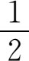
。如（有时加重音号）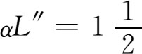
，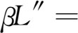
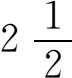
，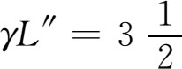
。写小的分数时在分子上加一重音符号，然后把分母写一次或两次，每次加两个重音符号。例如，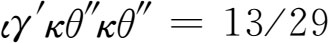
。丢番图则常把分母写在分子上面。当分子大于1时，埃及人是把这种分数写成单位分数之和的。这套写法在希腊人那里也可以看得到。例如，赫伦把
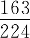
写成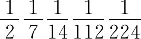
，但也用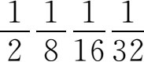
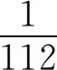
及其他式子表示同一分数。他也用以上所讲的希腊字母的表示方式。托勒玫也用埃及人的方式写有些分数，例如把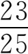
写成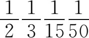
。加号是不写出来由读者自己体会的，而一般整数则当然是用希腊字母来表示的。用希腊人或埃及人那套办法写出来的普通分数很不便于作天文计算。因此亚历山大的希腊天文学家采用巴比伦人的60进制分数。我们不知道这种写法究竟何时开始，但在托勒玫的《大汇编》里就已采用了。因此托勒玫书中所写的31 25应理解为
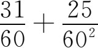
。他说他用60进制分数是为了避免用普通分数所引起的麻烦。他用以10为底的方法写整数，但并不用进位制记法。由于他的天文计算中很少出现大的整数，因此可以说他采用了60进制的记数法。用60进制记法来写分数而用非进位制的字母数字来记整数，这看来有些古怪而且不合理。但我们还是用130°15′17″.5这种写法。从上面所讲，可知亚历山大人已把分数本身当作数来看待，而古典时代的数学家则只提到整数之比，不提整数的部分，而且只在比例里用到比。但即使在古典时期，商业上就已采用真正的分数，即本身就当作数来看待的分数。在亚历山大时期，阿基米德、赫伦、丢番图和其他人都随意应用分数并拿来进行运算。不过从文字记载看来，他们并没有讲过分数概念，可能是认为这些分数在直观上很明显，可以接受并加以应用。
开平方的运算虽在古典希腊时代被人考虑过，但当时实际上对此是回避的。从柏拉图的著作里可以发现，毕达哥拉斯派在用近似数表达时是先用49/25代替2，然后得出7/5的。同样，特奥多鲁斯对于可能是用49/16代替3而得其近似数为7/4的。至于无理数本身在古典希腊时代的数学里则根本没有地位。
关于希腊人怎样处理根的情况，我们从阿基米德的著作里得到第二方面的材料。他在《圆的量度》（Measurement of a Circle）一书中主要是想求出π（圆周长与直径之比）的较好的近似值；在这过程中，他对大的整数和分数进行运算。他还得出的很好的近似值
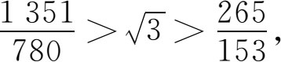
但没有说明他是怎样得出这个结果来的。历史文献中对于如何推出这结果的许多猜测之中，下面的说法似乎颇有道理。给定一数A，若把它写为
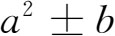
，其中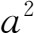
是最接近于A的一个有理数的平方（大于或小于A），b是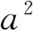
与A相差之数，则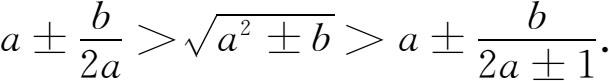
照这样做几步之后，确实得出阿基米德的结果。至于为求π的近似值，阿基米德先在命题1里证明圆面积等于一直角三角形的面积，该直角三角形的底等于圆周长，而高等于半径。现在他要求出圆周长。这个他用边数愈来愈多的内接和外切正多边形来逼近，并计算这些正多边形的周边。他所得π的结果是
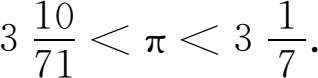
阿波罗尼斯也写了一本关于求圆面积的书，名叫《快速算出法》（Okytokion），他在那里自认为用较好的算术方法改进了阿基米德定出的π近似值。这是阿波罗尼斯脱离古典希腊数学风格的唯一著作。
赫伦在求平方根的近似值时常用
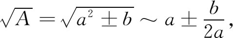
其中a及b的意义同前述一样。他得出这近似式的过程是，先取近似值为α＝（c＋A/c）/2，其中c是作为
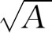
的任一猜测数；若把A写为a2＋b而取c＝a，则α＝a＋b/2a。赫伦又从α求出α1＝（α＋A/α）/2来改进α。显然，α愈接近于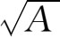
，α1这近似值就愈好。赫伦对α的基本表示式也曾由巴比伦人使用过。在亚历山大时期的后期，平方根的求法也像今天那样应用（a＋b）2＝a2＋2ab＋b2的原理。逐次近似值是凑试出来的，不过总使近似值的平方小于要求根的
那个数。泰奥恩在解释托勒玫所用的这一方法时，指出他用一个几何图形来帮助思考。这图形欧几里得用在《原本》第二篇的命题4里，表达（a＋b）2的几何图形。托勒玫给出的是
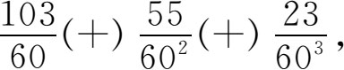
这相当于1.7320509，准确到小数点后六位数字。